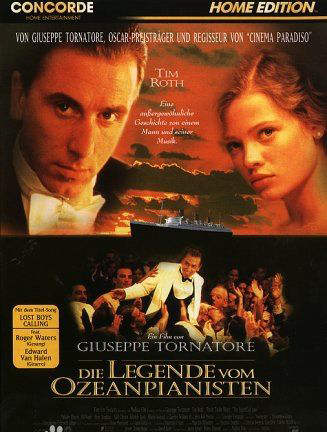

片中那位挑战1900，还大言不惭的说是他发明Jazz的那位仁兄在历史上确有其人，他就是Jelly Roll Morton。《The Crave》本来就是他的作品。在电影里饰演Jelly Roll Morton的那位Clarence Williams III，他父亲Clarence Williams也是早期Jazz的重要人物之一。据说是第一位在谱子上使用Jazz这个字眼的人。电影中的SS Virginian号在历史上确有其船，1904年出厂，1954年左右被废弃。它还与泰坦尼克号有关，据说沉船时SS Virginian号就在附近能接收到无线信号的地方。
·片中轮船的外观设计灵感来自于SS Lusitania号及其姐妹号SS Mauritania。1900弹钢琴的舞厅有着跟SS Mauritania号相似的圆形屋顶。
·最后在录音合成时采用的大部分实际音响出自钢琴家缔尤特布塔。
·虽然Tim Roth本来不会弹钢琴，但经过拍片前半年的魔鬼特训后应该是学会了。片子里对1900弹琴时手部的拍摄镜头充分说明了那是Tim Roth自己的手(他的手指不长)。要知道做到“形似”对初学者来说已经是很不容易了。
·本片耗资2千万美元，远远超出了当时在意大利拍片的平均水平。饰演令1900钟情的女孩的Mélanie Thierry是一名模特，多次出现在Vogue等杂志上，出演本片时她只有16岁。
·在乌克兰时，由于环境恶劣，语言不通，对剧本的分歧，加之两人脾气都不好，Tim与Tornatore一度只在万不得已时才同对方讲话，剧组移师罗马以后，他们的关系融洽了许多：旁观者描述他们像好朋友一样亲密。